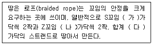
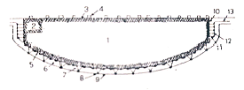
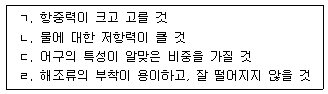
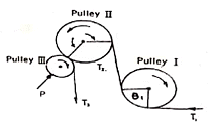
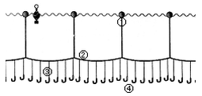
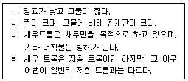

어로산업기사 (2015-05-31 기출문제)
1과목: 어구학
1. 다음 어구 중 그물실의 유연성이 특히 요구되는 것은?
- 정치망어구
- 자망어구
- 트롤어구
- 통발어구
(정답률: 95%)

2. 다음 (가)~(다)에 알맞은 것은?

- (가) 2, (나) 2, (다) 8
- (가) 2, (나) 3, (다) 10
- (가) 3, (나) 3, (다) 12
- (가) 3, (나) 3, (다) 9
(정답률: 94%)
3. 어구를 설계하는 과정에서 가장 먼저 결정해야 하는 것은?
- 구성 방법
- 어구 구조
- 어구 규모
- 재료의 종류 및 규격
(정답률: 79%)
4. 다음의 어구 재료 중 PA계에 속하는 것은?
- nylon
- kuralon
- saran
- tevilon
(정답률: 90%)
5. 후리어업에서 후릿줄의 구비요건이 아닌 것은?
- 킹크(kink)가 생기지 않을 것
- 침강속도가 클 것
- 표면이 매끄러울 것
- 지름의 축소가 적을 것
(정답률: 85%)
6. 그물감의 면적이 가장 넓어지는 성형율은?
- 약 90%
- 약 80%
- 약 70%
- 약 60%
(정답률: 94%)
7. 10절인 그물코의 크기는 몇 mm인가?
- 33.7
- 30.3
- 27.5
- 25.3
(정답률: 69%)
8. 기선권현망 어구의 수비 부분에 관한 설명으로 옳지 않은 것은?
- 길이는 20~35m이며 4단계로 나누어 자루 쪽으로 작은 코를 배치한다.
- 문턱은 어군의 하방 도피를 방지하기 위한 것으로 평면적인 모양은 직사각형 또는 삼각형이다.
- 펄갈이는 어구가 해저의 펄을 뜨는 경우 배설이 잘 되도록 하기 위한 보호망이다.
- 앞창은 뜸을 수면에 유지하고 뜸줄과 발줄장력의 균형을 맞추기 위한 것이다.
(정답률: 72%)
9. 샤클이나 코스 등을 2개 이상 동시에 연결할 때 사용하는 것은?
- G 샤클 (Block Shackle)
- 부착형 샤클 (Attaching Shackle)
- 링 샤클(Ring Shackle)
- 함입형 샤클 (Endless Shackle)
(정답률: 86%)
10. 직경 30cn의 유리구형뜸의 공기 중 무게가 200g이였다. 물속에성듸 부력은? (단, 유리뜸의 비중은 0.25로 계산한다.)
- 30g
- 300g
- 400g
- 600g
(정답률: 75%)
11. 쌍끌이 기선저인망의 뜸줄부 성형률은 저층트롤의 경우보다 더 크게하는데, 이는 쌍끌이 기선저인망의 어떤 특성 때문인가?
- 그물의 규모가 더 크기 때문
- 망고가 더 크기 때문
- 혀그물을 붗악하기 때문
- 예망 속도가 더 느리기 때문
(정답률: 95%)
12. 예망 어구에서 주로 중층 트롤 어구에만 관계가 있는 것은?
- Head rope
- Spreader
- Front weight
- Flapper
(정답률: 94%)
13. 뜸이 갖추어야 할 요건으로 적합하지 않은 것은?
- 부력이 클 것
- 비중이 클 것
- 부패 변질이 안될 것
- 조형가공이 쉬울 것
(정답률: 89%)
14. 낭장망과 주목망에 대한 설명으로 틀린 것은?
- 낭장망에는 날개 그물이 있다.
- 주목망은 밀물이나 썰물에 관계없이 어획할 수 있다.
- 주목망은 낭장망이 발달하여 만들어진 것으로 어규 구모도 낭장망보다 더 크다.
- 두 어구 모두 수심이 얕고 조류가 빠른 협수로에 부설하여 장기간 고정시켜 둔다.
(정답률: 86%)
15. 아래 그림은 건착망 어구의 모식도이다. 다음 설명 중 틀린 것은?15.

- 어획을 최종적으로 완수하는 곳은 2번 자루그물이다.
- 그물을 조일 때는(pursing) 9번 줄을 당긴다.
- 2번에 사용되는 망지는 1번에 사용되는 망지보다 크다.
- 그물 투망시 가장 먼저 투망되는 쪽은 2번 쪽이다.
(정답률: 91%)
16. 기선권현망의 자루그물에 주로 쓰이는 것은?
- 참매듭 그물감
- 여자 그물감
- 랏셀 그물감
- 관통 그물감
(정답률: 87%)
17. 그물어구의 설계도면에서 각부의 길이를 바르게 표시한 것은?
- 트롤의 폭을 그물감의 뻗친 길이로 표시
- 건착망의 깊이를 발줄의 길이로 표시
- 낙망의 길이를 그물감의 뻗친 길이로 표시
- 자망의 길이를 뜸줄의 길이로 표시
(정답률: 92%)
18. 그물실이 갖추어야 할 요건을 모두 짝지은 것은?

- ㄱ, ㄴ
- ㄱ, ㄷ
- ㄴ, ㄷ
- ㄷ, ㄹ
(정답률: 88%)
19. 유자망에 사용되는 어구 재료의 설명으로 틀린 것은?
- 막매듭 그물감이 가장 적합하다.
- 강도가 큰 재료를 사용하는 것이 좋다.
- 밧줄의 재료는 대부분 PP가 사용된다.
- 그물감은 유연성이 적은 망지가 적합하다.
(정답률: 91%)
20. 멍이란 어구를 고정시키기 위하여 가마니 등에 돌이나 자갈 등을 넣어서 사용하는 것을 말한다. 이것은 다음의 어떤 어구에 많이 사용되는가?
- 저층 고정자망
- 안강망
- 장어통발 어구
- 낙망
(정답률: 82%)
2과목: 어업기기학
21. Net Recoder의 기록으로 판별할 수 없는 것은?
- 어구의 예망 방향
- 어군의 입망 상황
- 망구의 높이
- 해면에서 그물까지의 깊이
(정답률: 65%)
22. 다음 어업 기기 중 별도의 완충 장치가 부설되어 있는 것은?
- 트롤 윈치
- 포경 윈치
- 양승기
- 양망기
(정답률: 73%)
23. 인력을 동력단위로 환산할 때는 연속작업이 가능한 힘을 기준으로 한다. 그 기준은 몇 kg·m/sec인가?
- 6
- 12
- 15
- 20
(정답률: 83%)
24. 다음 중 초음파의 발사 손실이 가장 적은 저질은?
- 바위
- 펄
- 어군
- 자갈
(정답률: 90%)
25. 양승기로 줄을 감아올릴 때 다음 각 부분의 장력 중 가장 큰 것은?
- 배 밖의 연승의 장력
- 유도풀리를 통과한 후의 장력
- 권양풀리를 통과한 후의 장력
- 억압롤러를 통과한 후의 장력
(정답률: 68%)
26. 어군탐지기에서 어군의 크기를 판단하는데 기준으로 할 수 있는 선은?
- 분시선
- 발진선
- 기준선
- 표시선
(정답률: 79%)
27. 네트 레코더의 수파기는 장대(Boom)로 현측에서 멀리 끌고 있는데 그 까닭은?
- 잘 끌리도록 하기 위해서
- 감시에 편리하도록 하기 위해서
- 복잡한 수류의 영향을 피하기 위해서
- 지향성을 좋게 하기 위해서
(정답률: 80%)
28. 양망기의 양망능력을 증대시키기 위한 방법으로 적절하지 않은 것은?
- 드럼의 단면을 V홈으로 한다.
- 양망기의 마찰계수를 작게 한다.
- V홈 내면에 돌기를 낸다.
- 그물과 드럼의 접촉각을 크게 한다.
(정답률: 90%)
29. 다음 중 기록식 어군탐지기의 장점과 가장 거리가 먼 것은?
- 기록이 남으므로 항시 보고 있을 필요가 없다.
- 해저의 단면 상태를 볼 수 있다.
- 어군의 농밀도를 판정할 수 있다.
- 어군을 순간적으로 탐지하기에 편리하다.
(정답률: 87%)
30. 무선부표의 사용목적은?
- 무선중계를 위하여
- 선박을 매달기 위하여
- 선박의 위치를 알리기 위하여
- 어구의 위치를 알리기 위하여
(정답률: 91%)
31. 양승기(Line hauler)에서 감아올리는 순동력이 일정할 때 줄에 걸리는 장력과 감아올리는 속도와의 사이에는 기본적으로 어떤 관계가 있게 되는가?
- 비례관례
- 반비례관계
- 제곱에 비례관례
- 관계없다.
(정답률: 78%)
32. 어업기기의 분류 중 어업기계류에 속하는 것은?
- 양망기
- 망심계
- 무선무표
- 수중송수상기
(정답률: 90%)
33. 어군탐지기 지시방법을 레이다의 영상지시방법과 같도록 한 것은?
- 수직 어군탐지기
- PPI방식 어군탐지기
- 방위 어군탐지기
- 전자주사 어군탐지기
(정답률: 86%)
34. 선저에 장치되어 있는 송·수파기를 기계적으로 회전시키면서 임의의 방향으로 예리한 초음파빔을 발사하여 자선 주위의 물표를 탐지하고, 그 물표의 반사 신호를 음극선관의 화면에 평면적으로 지시하는 방식의 소나는?
- 서치라이트 소나
- 스캐닝 소나
- 멀티 빔 소나
- 사이드 룩킹 소나
(정답률: 81%)
35. 소나의 사용상에 따른 설명 중 틀린 것은?
- 초음파 빔을 수평으로 발사하기 때문에 송·수파기를 선저로부터 충분히 돌출시켜야 한다.
- 원거리를 탐지해야 하므로 고출력의 발진기가 필요하다.
- 물표의 방향을 정확하게 측정하기 위해 펄스폭을 좁혀 거리 분해능을 높혀야 한다.
- 어군의 범위나 거리를 쉽게 측정할 수 있어 어군의 움직임을 연속적으로 파악할 수 있다.
(정답률: 72%)
36. 그림은 다랑어 주낙의 양승기이다. 풀리(pulley) I는 기능상 어떤 역할을 하는가?

- 방향 풀리 역할
- 속도 풀리 역할
- 유도 풀리 역할
- 압착 풀리 역할
(정답률: 86%)
37. 권양 윈치에서 한 기어(gear)의 반지름이 200mm, 치수가 48이고, 이와 맞물고 있는 기어의 반지름이 300mm일 때 그 치수는?
- 32
- 56
- 64
- 72
(정답률: 78%)
38. 어군탐지기에서 해저 부근의 어류와 해저의 분변이 곤란한 경우 이를 개선하기 위해 조작하는 것은?
- Depth selector
- White line control
- Frequency control
- Focus control
(정답률: 88%)
39. 전개판 감시 장치(otter gragh)의 기능을 바르게 나타낸 것은?
- 전개판 전개 각도 측정
- 양쪽 전개판 사이의 간격 측정
- 전개판 분실 방지 기능
- 해저로부터 전개판 높이 측정
(정답률: 77%)
40. Fich pump(물고기 펌프)는 다음 중 어던 펌프의 원리를 이용한 것인가?
- 왕복펌프
- 원심펌프
- 프로펠러 펌프
- 선전펌프
(정답률: 94%)
3과목: 어장학
41. 사리와 조금은 몇일 주기로 반복되는가?
- 8.6 일
- 14.3일
- 20.6일
- 25.4일
(정답률: 92%)
42. 다음 중 바다 속에 가장 깊게 투과되는 빛의 색깔은?
- 녹색
- 청색
- 적색
- 황색
(정답률: 91%)
43. 다음 어종 중 안강망 어업의 주 어획 대상은?
- 조기
- 고등어
- 명태
- 삼치
(정답률: 86%)
44. 심해파과 천해파의 몰입자 운동을 바르게 나열한 것은?
- 심해파 - 원운동, 천해파 - 원운동
- 심해파 - 원운동, 천해파 - 타원운동
- 심해파 - 타원운동, 천해파 - 원운동
- 심해파 - 타원운동, 천해파 - 타원운동
(정답률: 89%)
45. 다음 중 어업과 선박의 운항 등에 큰 영향을 미치는 조석 간만의 차가 최대인 시기는?
- 신월(초승달) 전후 1~2일
- 상현 전후 1~2일
- 하현 전후 1~2일
- 하루 중 달의 정중시
(정답률: 81%)
46. 용승이 일어날 때 나타나는 주 현상은?
- 표면 수온이 높아진다.
- 식물성 플라크톤이 증가한다.
- 탁도가 커진다.
- 영양염류의 결핍 현상이 일어난다.
(정답률: 78%)
47. 다음 어류 중 차가운 물을 좋아하는 한류성 어종은?
- 명태
- 전갱이
- 고등어
- 다랑어
(정답률: 90%)
48. 중층 채수의 목적과 거리가 먼 것은?
- 염분 측정
- 수온 측정
- 현탁물량 측정
- 용존 산소량 측정
(정답률: 66%)
49. 해양생물의 일주기 수직 운동과 가장 관련이 깊은 요인은?
- 수온
- 염분
- 투명도
- 광선
(정답률: 74%)
50. 다음 중 동상온도계로서 물통으로 채수한 물의 수온을 측정하는 방법으로 가장 좋은 것은?
- 온도계의 구부만 물에 비스듬히 넣고 측정한다.
- 온도계의 구부반 물에 넣고 수온사두를 수면위로 하여 측정한다.
- 온도계의 구부와 수은사두를 물 속에 거의 잠기게 하고
- 온도계를 물통에 넣었다가 2분후에 뽑아서 눈높이에서 측정한다.
(정답률: 78%)
51. 풍속에 관한 내용 중 틀린 것은?
- 정시 관측 시각 전 1시간 동안의 풍속을 평균하여 구한다.
- 풍속의 단위는 주로 m/s가 사용된다.
- 육안 관측에는 보퍼트 풍력 계급을 사용한다.
- 기록 중 최대의 순간 풍속을 순간 최대 풍속이라 한다.
(정답률: 78%)
52. 저서 생물의 어장 환경 조사와 어초 탐색에 가장 중요한 것은?
- 수온과 염분
- 수색과 투명도
- 유황
- 지형과 저질
(정답률: 80%)
53. 지형과 저질이 생물 활동에 미치는 영향에 대한 설명이 틀린 것은?
- 해안선이 복잡한 구역은 동물의 생활 조거에 호적한 곳이다.
- 해저 융기 등은 수직 혼합을 일으켜 생산력이 크다.
- 지형과 저질이 불규칙한 곳에 어류의 국지화 또는 농집을 이룬다.
- 연질의 저질은 저질의 변동이 적어 정착성 생물 분포가 많다.
(정답률: 80%)
54. 어장의 성립 조건이 아닌 것은?
- 유용 수산 동·식물이 분포 서식하고 양이 풍부할 것
- 어업 근거지에서 가까울 것
- 경제적인 채산이 맞을 것
- 유용 수산 동·식물의 체포 혹은 어획이 가능할 것
(정답률: 80%)
55. 해양생뭄을 운동능력을 기준으로 한 분류에 속하지 않는 것은?
- 부유생물
- 중층생물
- 저서생물
- 유영생물
(정답률: 82%)
56. 우리나라 동해에서 동한 난류와 북한 한류 조격역에 가장 활발하게 나타나는 어류는?
- 명태
- 고등어
- 꽁치
- 쥐치
(정답률: 75%)
57. 해류의 일반적인 성질에 관한 설명으로 옳지 않은 것은?
- 해류는 때때로 사행운동을 한다.
- 유향이 NE라면 NE 방향에서 흘러온다.
- 유속은 대개 m/sec, knot로 표시한다.
- 장기간 평균하면 대게 일정 방향과 속도를 가진다.
(정답률: 86%)
58. 다음 파도 중 가장 주기가 긴 것은?
- 풍파
- 쓰나미
- 놀
- 조석파
(정답률: 87%)
59. 다음 중 가장 관계가 깊은 것끼리 짝지어진 것은?
- 지형류 - 바람
- 용승류 - 압력경도력
- 엘리뇨 - 남동무역풍
- 월령 - 침강류
(정답률: 80%)
60. 여름철에 가장 비를 잘 내리게 하는 구름은?
- 난층운
- 고층운
- 권운
- 적란운
(정답률: 90%)
4과목: 어법학
61. 선미식 트롤선의 좌우 톱롤러 사이의 간격이 10m 이고 끌줄의 길이가 300m, 끌줄의 전개각이 10°일 때 전개판의 전개 간격은?(단, sin 5°≒0.087, sin 10°≒0.174)
- 36.1m
- 62.2m
- 108.3m
- 114.2m
(정답률: 72%)
62. 다랑어 주낙용 미끼가 아닌 것은?
- 꽁치
- 고등어
- 오징어
- 멸치
(정답률: 87%)
63. 기선권현망 선단에 속하는 어선이 아닌 것은?
- 가공선
- 망선
- 집어선
- 어탐선
(정답률: 84%)
64. 명태를 어획대상으로 하는 자망으로 가장 적합한 것은?
- 얽애 그물
- 표층 유자망
- 중층 유자망
- 저층 유자망
(정답률: 80%)
65. 한국 근해에서 쓰는 꽁치 유자망의 설(깊이)은?
- 100코
- 200코
- 300코
- 400코
(정답률: 74%)
66. 걸그물 어법 중 그물로 어군을 둘러 싼 뒤에 타격이나 소리로 자극을 주어 고기가 놀라서 도망가게 함으로써, 그물코에 꽂히도록 하여 잡는 어구는?
- 고정 걸그물
- 두리 걸그물
- 흘림 걸그물
- 표층 걸그물
(정답률: 92%)
67. 정치망 어구 구성의 그물에 있어서 적합한 섬유는?
- 조류에 저항이 큰 섬유
- 피로에 약한 섬유
- 수중 중량이 적은 섬유
- 수중 중량이 큰 섬유
(정답률: 77%)
68. 안강망 어업에 대한 설명응로 옳은 것은?
- 조류가 빠른 곳에서 조업한다.
- 유도함정어법에 속한다.
- 어구를 예인하면서 조업하기도 한다.
- 주로 중층성 어족을 어획한다.
(정답률: 79%)
69. 다랑어 선망에서 뜸줄과 발줄의 성형률은?
- 70%
- 72%
- 74%
- 76%
(정답률: 70%)
70. 트롤 어구에서 갓다리(헛줄)의 용도는?
- 힘줄의 강도증각용
- 끝자루 연결용
- 전개판 연결용
- 밧줄 강도증강용
(정답률: 80%)
71. 개량식 안강망은 재래식의 어떤 면을 크게 개량하고자 하는 것인가?
- 그물감의 배치
- 각종 줄의 배치
- 전개 장치
- 조업방식
(정답률: 90%)
72. 선망 그물의 길이를 결정하는 요소는?
- 어군의 유영속도
- 어군의 최대 유영 수심
- 그물에 대한 어군의 행동
- 그물 길에 대한 적정한 비율
(정답률: 72%)
73. 그림에서 ①~④의 명칭을 순서대로 바르게 나열한 것은?

- 부표, 부표줄, 아릿줄, 모릿줄
- 부표, 아릿줄, 부표줄, 모릿줄
- 부표, 부표줄, 모릿줄, 아릿줄
- 부표, 모릿줄, 부표줄, 아릿줄
(정답률: 89%)
74. 정치망의 길그물이 갖추어야할 요소로 적당하지 않는 것은?
- 망지의 날림 방지
- 길그물은 회유어군의 이동을 차단하도록 부설
- 망지가 잘 보이도록 유색망지 사용
- 그물코가 매우 적은 것을 사용
(정답률: 74%)
75. 다음 보기에서 새우 트롤의 특징을 모두 고른 것은?

- ㄱ, ㄷ
- ㄱ, ㄴ, ㄷ
- ㄱ, ㄷ, ㄹ
- ㄱ, ㄴ, ㄷ, ㄹ
(정답률: 91%)
76. 집어의 방법과 관계가 먼 것은?
- 차단유도
- 소집
- 구집
- 유집
(정답률: 84%)
77. 권현망 조업 중 자루 입구의 깊이를 조정하는 것은?
- 발줄
- 돋움줄
- 버릿줄
- 테두릿줄
(정답률: 69%)
78. 오터 트롤에서 전개판이 부착되는 부분에 있는 줄로써, 예망 중에는 아무런 역할을 하지 않지만, 양망할 때에는 전개판이 분리된 후 끌줄과 후릿줄을 연결하여 윈치에 감기게 하는 역할을 하는 줄의 명칭은?
- 갓다리
- 고삐줄
- 꼬리줄
- 멍에
(정답률: 76%)
79. 정치망 아구에서 통그물은 크게 헛통, 원통, 그리고 무엇으로 이루어지는가?
- 혀그물
- 길그물
- 비탈그물
- 운동장 그물
(정답률: 78%)
80. 기선 권현망 수비 부분에 해당하지 않는 것은?
- 내등망
- 문턱
- 뻘갈이
- 앞창
(정답률: 73%)